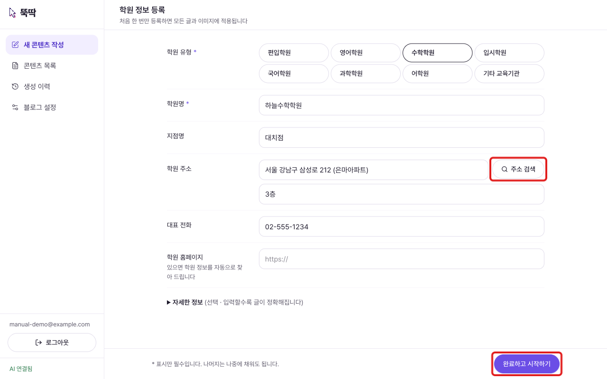
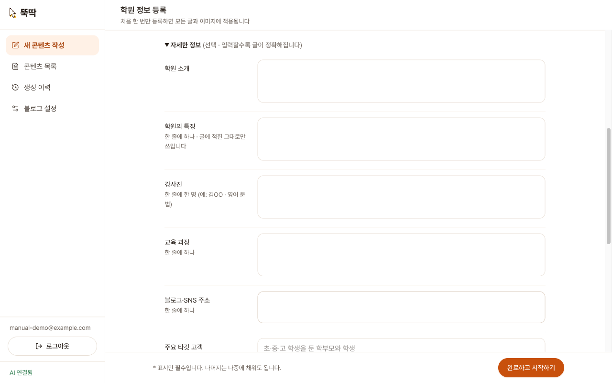
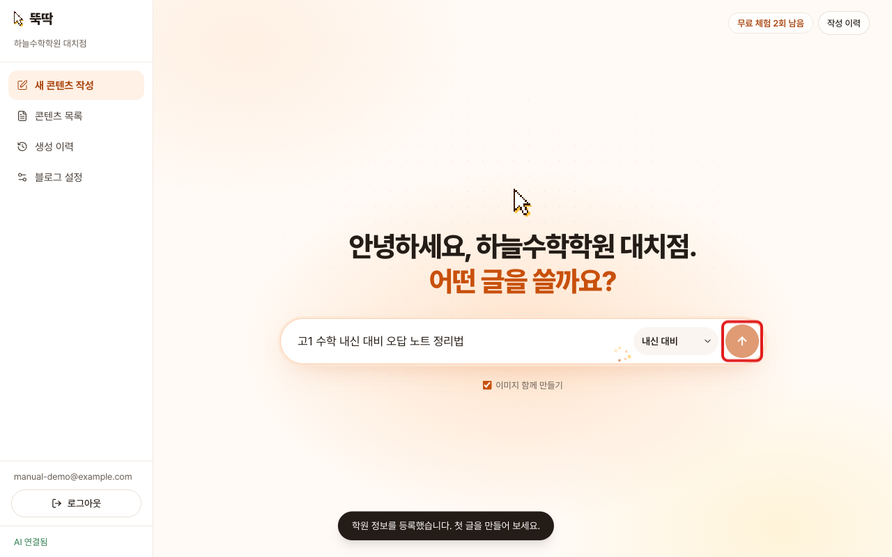
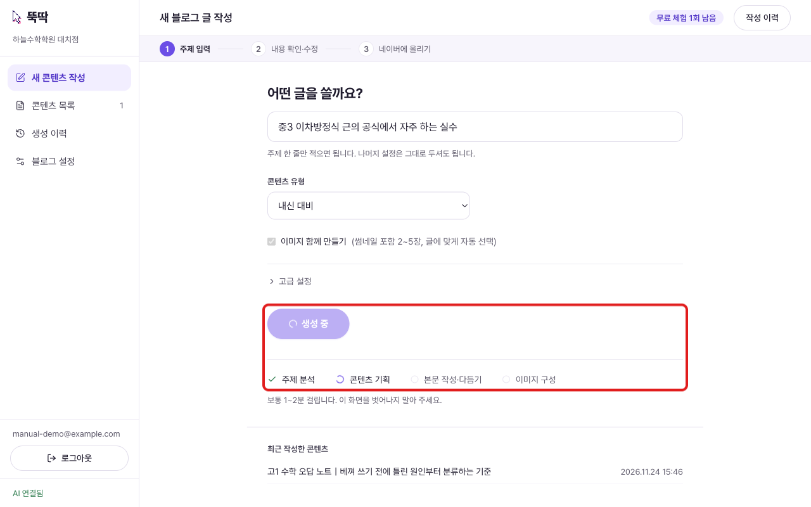
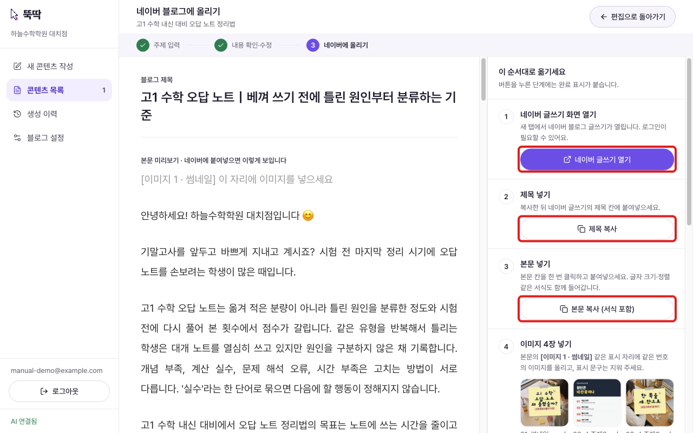
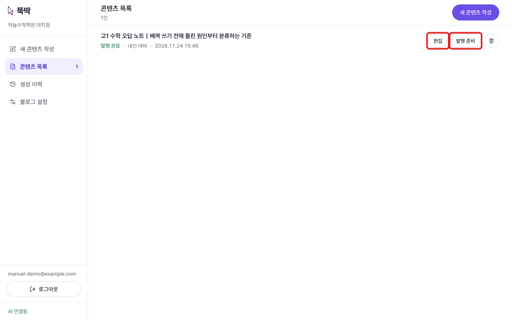
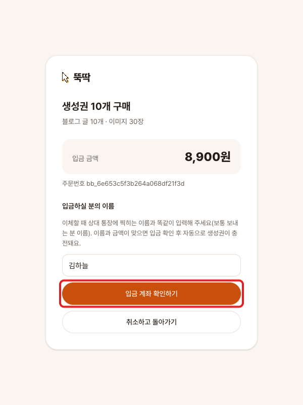
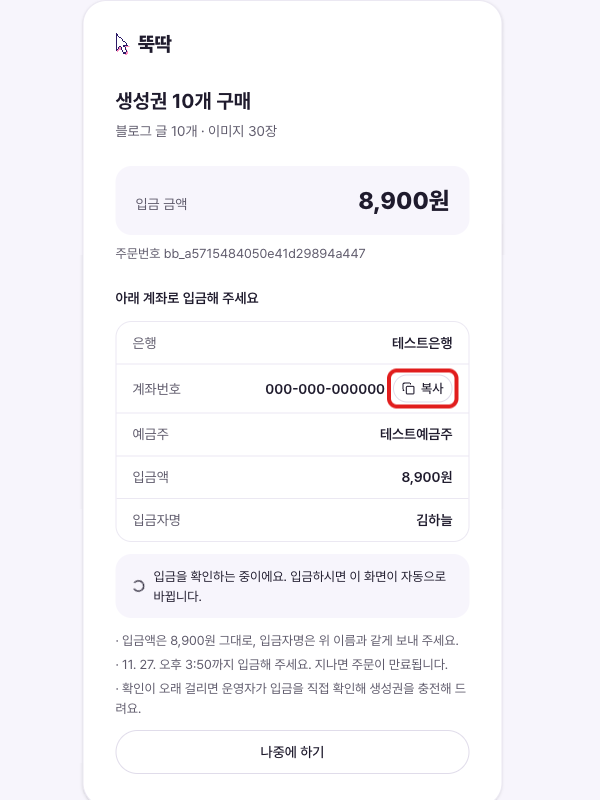

뚝딱 사용설명서
2026년 11월 기준
예시 사용자 김하늘 원장(하늘수학학원 대치점)이 처음 가입해 블로그 글을 올리기까지의 순서입니다. 화면의 빨간 상자는 그 단계에서 누를 버튼입니다.
- 회원가입
- 학원 정보 등록
- 주제 입력
- 글 생성
- 내용 확인과 수정
- 네이버에 올리기
- 콘텐츠 목록
- 생성 이력
- 블로그 설정
- 생성권 구매
- 다시 로그인
1. 회원가입
가입하면 무료로 글 2편을 만들 수 있습니다.

- 로그인 화면에서 회원가입을 누릅니다.

- 이름, 전화번호, 이메일을 입력하고 다음을 누릅니다.

- 아이디와 비밀번호를 입력하고 가입하기를 누릅니다.
가입이 끝나면 학원 정보 등록 화면으로 이동합니다.
2. 학원 정보 등록
처음 한 번만 입력하며, 모든 글에 반영됩니다.

- 학원 유형을 고르고 학원명과 지점명을 입력합니다.
- 주소 검색으로 주소를 찾고 대표 전화를 입력합니다.
- 완료하고 시작하기를 누릅니다.

자세한 정보(학원 소개, 특징, 강사진 등)는 선택 항목입니다. 입력할수록 글이 정확해집니다.
3. 주제 입력
왼쪽 메뉴의 새 콘텐츠 작성 화면입니다.

- 쓸 글의 주제를 한 줄로 입력합니다.
- 콘텐츠 유형을 고릅니다.
- 글 생성을 누릅니다.
4. 글 생성
1분에서 3분 정도 걸립니다.

- 진행 단계가 모두 끝날 때까지 화면을 그대로 둡니다.
생성이 끝나면 편집 화면이 자동으로 열립니다.
5. 내용 확인과 수정
고친 내용은 자동으로 저장됩니다.

- 본문을 읽고 필요한 부분을 바로 고칩니다.
- 오른쪽 검토 결과를 확인합니다.

- 문장을 선택하면 나오는 도구로 문장을 다듬거나 길이를 조절합니다.

- 이미지 탭에서 이미지를 다시 만들거나 내려받습니다.
확인이 끝나면 오른쪽 위 발행 준비를 누릅니다.
6. 네이버에 올리기
오른쪽 안내 순서대로 진행합니다.

- 네이버 글쓰기 열기를 누릅니다.
- 제목 복사 후 네이버 제목 칸에 붙여넣습니다.
- 본문 복사 후 네이버 본문 칸에 붙여넣습니다.

- 이미지 한 번에 받기로 이미지를 받아 표시된 자리에 넣습니다.
- 필요하면 태그 복사로 태그를 넣습니다.
- 네이버에서 발행한 뒤 네이버에 발행했어요를 누릅니다.
7. 콘텐츠 목록
만든 글을 모아 봅니다.

- 편집은 수정 화면으로, 발행 준비는 올리기 화면으로 이동합니다.
8. 생성 이력
글을 만든 기록입니다. 지금 쓰는 브라우저에만 저장됩니다.

- 항목을 누르면 해당 글이 열립니다.
9. 블로그 설정
모든 글에 공통으로 적용되며, 바꾸면 바로 저장됩니다.

- 위쪽 탭으로 원하는 항목에 이동합니다.
- 학원 정보 수정으로 등록한 학원 정보를 고칩니다.

- 이미지 기본 레이아웃과 색을 정합니다.

- 글 앞뒤에 들어갈 인사말과 예약 링크를 정합니다.
10. 생성권 구매
무료 체험을 다 쓰면 나타납니다. 생성권은 365일 동안 쓸 수 있습니다.

- 원하는 생성권의 계좌이체로 구매를 누릅니다.

- 입금자 이름을 입력하고 입금 계좌 확인하기를 누릅니다.

- 안내된 계좌로 표시된 금액을 그대로 입금합니다. 확인되면 생성권이 자동으로 충전됩니다.
계좌 정보는 예시입니다. 실제 화면에는 실제 계좌가 표시됩니다.
11. 다시 로그인
다음 접속부터는 로그인만 하면 됩니다.

- 아이디와 비밀번호를 입력하고 로그인을 누릅니다.